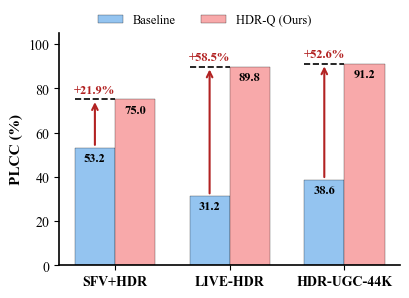
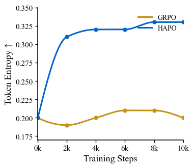

CVPR 2026
HDR-Q: Seeing Beyond 8 Bits
Multimodal LLMs for HDR Video Quality Assessment
with HDR-Aware Policy Optimization
Shreshth Saini
Laboratory for Image & Video Engineering (LIVE) · The University of Texas at Austin
Advised by Prof. Alan C. Bovik
Can AI see and reason about
HDR video quality?
Today's answer: No. Every existing model was built for the 8-bit SDR world.
HDR Is Not "Better SDR" — It's a Different Signal Space
Every modern phone captures 10-bit HDR by default.
YouTube, Instagram, TikTok — billions of daily HDR uploads. HDR10 supports 10-bit depth, BT.2020 wide color gamut, PQ perceptual quantizer. Peak luminance ≥1000 nits vs SDR ~100 nits.
New perceptual phenomena SDR models cannot see:
Highlight clipping · Near-black banding · Color blooming · PQ quantization artifacts · Exposure flicker · Wide-gamut chroma shifts
Core argument:
Standard vision encoders (SigLIP, CLIP) process images in 8-bit sRGB. They are structurally blind to HDR-specific distortions. Not a training gap — a representation gap.

HDR preserves luminance and color detail that SDR collapses
Where Current Methods Break
No existing method combines HDR-aware perception with quality reasoning
| Method Family | HDR Input | Percept. Ground. | Reasoning | Cont. MOS | Interp. | SROCC |
|---|---|---|---|---|---|---|
| Classical (BRISQUE, VMAF) | ✗ | ✗ | ✗ | ✓ | ✗ | 0.41 |
| Deep VQA (FastVQA, DOVER) | ✗ | ~ | ✗ | ✓ | ✗ | 0.51 |
| HDR-Specific (HIDRO-VQA) | ✓ | ✓ | ✗ | ✓ | ✗ | 0.85 |
| MLLM-VQA (Q-Insight, DeQA) | ✗ | ✗ | ✓ | ~ | ✓ | 0.52 |
| HDR-Q (Ours) | ✓ | ✓ | ✓ | ✓ | ✓ | 0.92 |
The gap HDR-Q fills:
HDR-aware visual perception + continuous quality prediction + interpretable chain-of-thought reasoning. No prior method has all three.
Three Fundamental Obstacles
Each requires a dedicated solution — together they define the HDR-Q architecture
O1
SDR-pretrained
vision encoders
Blind to 10-bit PQ
O2
Continuous MOS
from token space
Bridging autoregressive & regression
O3
Modality
neglect
GRPO ignores HDR tokens
Evidence: GRPO with HDR input → 0.875 SROCC. SDR-only → 0.891. Adding HDR made it worse.
Beyond8Bits: The Foundation
First large-scale HDR-UGC quality dataset — the training ground for HDR-Q
Format: 10-bit HEVC, PQ transfer, BT.2020 · 360p–1080p · 0.2–5 Mbps bitrate ladder
Sources: 2,253 crowdsourced (diverse UGC) + 4,608 Vimeo CC (nature, outdoor, low-light)
Quality control: HDR10 display verification · Qualification quiz · Golden set (SROCC 0.85) · SUREAL MOS aggregation · Inter-subject SROCC 0.90

Dataset diversity, HDR vs SDR characteristics, and HDR-Q performance gains
HDR-Q: Architecture Overview

Solves O1: HDR-Aware Encoder
SigLIP-2 + dual-domain contrastive learning. Native 10-bit PQ. Dual HDR + SDR pathways.
Solves O3: HAPO Training
Contrastive KL + dual entropy + entropy-weighted advantage. Forces HDR modality attention.
Solves O2: Structured Output
Ovis2.5 (9B) + Rank-4 LoRA. <think> reasoning + <answer> MOS score. Gaussian reward σ=3.
HDR-Aware Vision Encoder
Contrastive HDR/SDR discrimination
Pull HDR close to caption, push SDR away
Full encoder loss
Semantic alignment + HDR discrimination
Design justifications
Why SigLIP-2? Strong semantic priors, multimodal-compatible.
Why contrastive? HDR info = what's in HDR but absent in SDR.
Why 10-bit PQ input? Tone-mapping destroys the signal we need.
Captions by Qwen2.5-VL-72B for quality-aware descriptions.

SigLIP-2 contrastive finetuning with matched HDR-SDR pairs and quality-aware captions
The Modality Neglect Problem
The most surprising finding — and the core motivation for HAPO
HDR-Q (SDR input only)
0.8914
Standard GRPO (HDR+SDR input)
0.8753
Adding HDR made it worse.
Why this happens:
- GRPO treats all tokens equally — no modality importance signal
- Autoregressive generation enables text-context shortcuts
- SDR features are familiar; HDR features are foreign → model ignores the foreign
- Result: higher input dimensionality, lower information utilization
HAPO fixes this: 0.9206 SROCC
By explicitly rewarding different outputs for HDR vs SDR inputs.
HAPO — Core Mechanism: HDR-SDR Contrastive KL
If the model ignores HDR → identical outputs for HDR & SDR → DKL ≈ 0. We maximize this divergence.
Maximized with coefficient γ = 0.5 in the HAPO objective
Mutual information between output and HDR content is lower-bounded. The policy is mathematically guaranteed to use HDR information.
The HAPO Objective
Entropy-weighted
advantage (HEW)
λHEW=0.3
Reference KL
stability
β=0.02
Contrastive KL
HDR grounding
γ=0.5
Dual entropy
anti-collapse
η₁=0.01, η₂=0.05
Training Pipeline & Reward Design
Stage 1: Modality Alignment
Full HAPO with γ=0.5. Curated Beyond8Bits subset with matched HDR-SDR pairs. Goal: teach model to attend to HDR-specific information. Both stages use RL — no SFT stage.
Stage 2: Quality Calibration
Full Beyond8Bits corpus. Score reward as primary signal, reduced γ. Goal: prediction accuracy while preserving HDR grounding from Stage 1.
Why two stages?
Modality alignment and quality calibration are competing objectives. Aggressive contrastive training degrades absolute accuracy; pure quality training enables modality neglect. Sequential prioritization resolves the tension.
Composite Reward
Rfmt: Binary — valid <think>/<answer> tags = 1
Rscore: Gaussian — exp(−(ŝ−s*)²/2σ²), σ=3. Smooth, differentiable.
Rself: Majority-vote consistency across K=8 completions.
Main Results: Beyond8Bits Benchmark
| Method | SROCC↑ | PLCC↑ | RMSE↓ |
|---|---|---|---|
| BRISQUE | 0.410 | 0.469 | 11.70 |
| CONTRIQUE | 0.625 | 0.605 | 15.02 |
| CONVIQT | 0.799 | 0.810 | 8.48 |
| HIDRO-VQA | 0.851 | 0.878 | 6.09 |
| Q-Insight (best MLLM) | 0.517 | 0.562 | 20.78 |
| HDR-Q (SDR only) | 0.891 | 0.890 | 7.42 |
| HDR-Q (Full) | 0.921 | 0.912 | 5.16 |
(zero-shot)
(zero-shot)

Zero-shot generalization without fine-tuning on target datasets
Qualitative: HDR-Q vs Baseline Reasoning

HDR-Q identifies true HDR artifacts (highlight preservation, banding, color fidelity). Ovis2.5 baseline hallucinates non-existent issues.
Ablation: Every Component Is Justified
| Variant | SROCC | RMSE | Tok. H |
|---|---|---|---|
| GRPO baseline | 0.81 | 10.73 | 0.20 |
| + HDR Encoder | 0.83 | 8.96 | 0.24 |
| HAPO w/o Contrastive KL | 0.86 | 7.10 | 0.29 |
| HAPO w/o HEW | 0.88 | 6.11 | 0.27 |
| HAPO w/o Dual Ent. | 0.91 | 5.82 | 0.26 |
| HDR-Q (Full) | 0.92 | 5.15 | 0.33 |
1. Contrastive KL — CRITICAL
0.92 → 0.86 without. Largest single drop. Prevents modality neglect.
2. HEW — Token-level credit assignment
0.92 → 0.88. Directs gradient to quality-relevant tokens.
3. HDR Encoder — Foundation
0.83 → 0.81. Essential for 10-bit PQ representation.
4. Dual Entropy — Stability
0.92 → 0.91. Prevents collapse, maintains exploration.
Token entropy: 0.20 → 0.33. Model becomes more uncertain at quality-critical decisions, not less. This is healthy.
Training Dynamics: HAPO vs GRPO

Token entropy during training — GRPO collapses, HAPO maintains healthy exploration
GRPO failure mode
Entropy drops → deterministic → ignores visual modality → text-context shortcuts
HAPO stabilization
Dual entropy maintains H ≈ 0.33 at quality-critical positions. Healthy exploration preserved.
Reasoning efficiency
CoT: 168 → 137 tokens (−18%). More concise, more focused. Boilerplate removed, quality observations retained.
What We Learn & Remaining Challenges
Key insights
- Modality neglect is the bottleneck, not encoder capacity. The contrastive KL mechanism is necessary and sufficient for HDR grounding.
- Token-level entropy is a diagnostic signal. Increasing entropy at decision points = better visual grounding. Collapsing entropy = text shortcuts.
- Two-stage RL outperforms SFT→RL. Both stages use RL, ensuring HDR grounding from initialization.
Remaining challenges
- Temporal reasoning is limited to T=8 frame sampling. Long-range temporal quality patterns may be missed.
- Extreme out-of-distribution content (e.g., synthetic HDR, gaming HDR) not well represented in training.
- Inference cost — MLLM inference is slower than lightweight VQA models. Not yet real-time.
Key Takeaways
First MLLM for HDR video quality. Prior MLLMs: 0.52 SROCC. HDR-Q: 0.92.
HAPO: principled solution to modality neglect. Three mechanisms, formal MI guarantee, all ablated.
Strong zero-shot generalization. 0.908 LIVE-HDR, 0.725 SFV+HDR — no fine-tuning.
Perception-grounded reasoning. CoT references HDR-specific phenomena baseline models cannot articulate.
Next: HDR-Q as reward model for HDR generation & restoration → closing the perception-generation loop.